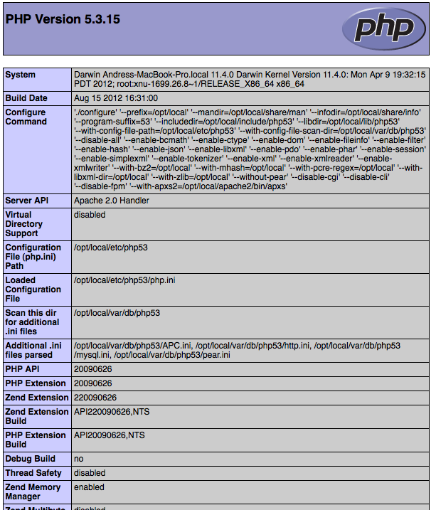
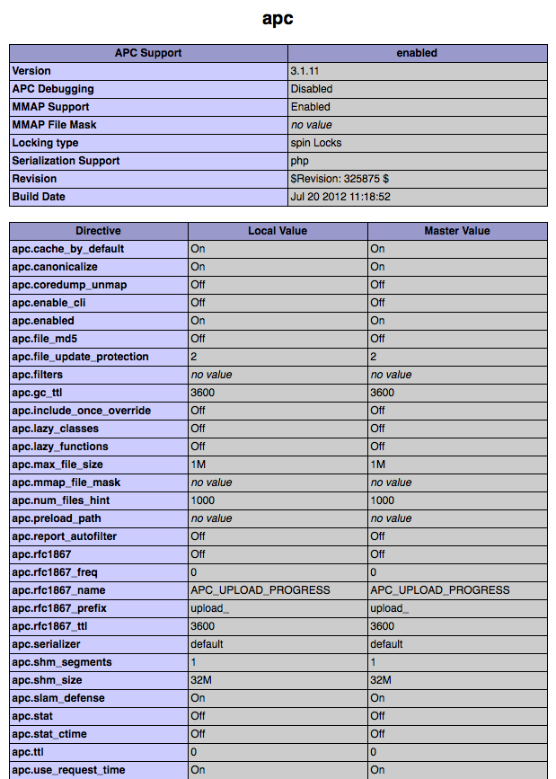

Framework Benchmarks¶In the past, performance was not considered one of the top priorities when developing web applications. Reasonable hardware was able to compensate for that. However when Google decided to take site speed into account in the search rankings, performance became one of the top priorities alongside functionality. This is yet another way in which improving web performance will have a positive impact on a website. The benchmarks below, show how efficient Phalcon is when compared with other traditional PHP frameworks. These benchmarks are updated as stable versions are released from any of the frameworks mentioned or Phalcon itself. We encourage programmers to clone the test suite that we are using for our benchmarks. If you have any additional optimizations or comments please write us. Check out source at Github What was the test environment?¶APC intermediate code cache was enabled for all frameworks. Any Apache mod-rewrite feature was disabled when possible to avoid potentially additional overheads. The testing hardware environment is as follows:
PHP version and info:

APC settings:

List of Benchmarks¶ChangeLog¶New in version 1.0: Update Mar-20-2012: Benchmarks redone changing the apc.stat setting to Off. More Info Changed in version 1.1: Update May-13-2012: Benchmarks redone PHP plain templating engine instead of Twig for Symfony. Configuration settings for Yii were also changed as recommended. Changed in version 1.2: Update May-20-2012: Fuel framework was added to benchmarks. Changed in version 1.3: Update Jun-4-2012: Cake framework was added to benchmarks. It is not however present in the graphics, since it takes 30 seconds to run only 10 of 1000. Changed in version 1.4: Update Ago-27-2012: PHP updated to 5.3.15, APC updated to 3.1.11, Yii updated to 1.1.12, Phalcon updated to 0.5.0, Added Laravel, OS updated to Mac OS X Lion. Hardware upgraded. External Resources¶ |